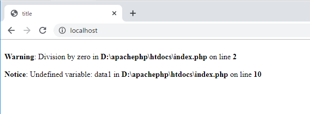
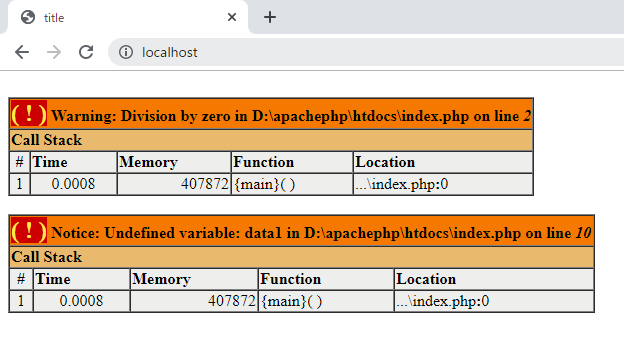
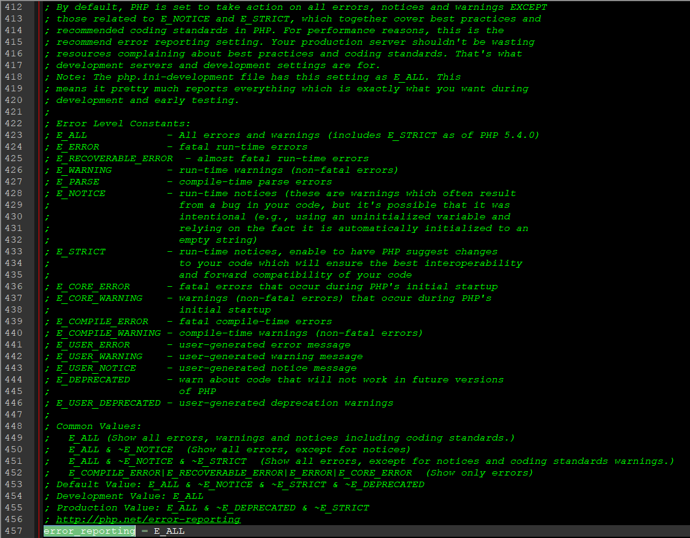
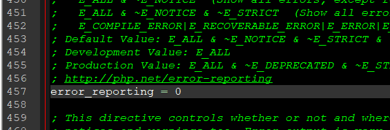
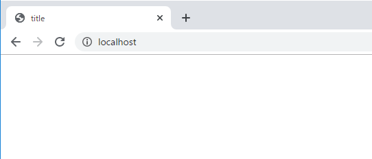
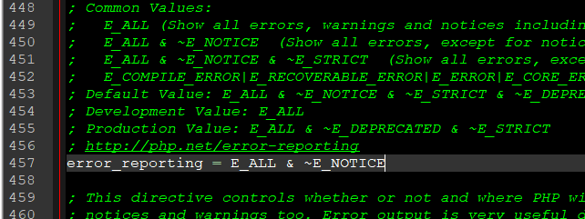
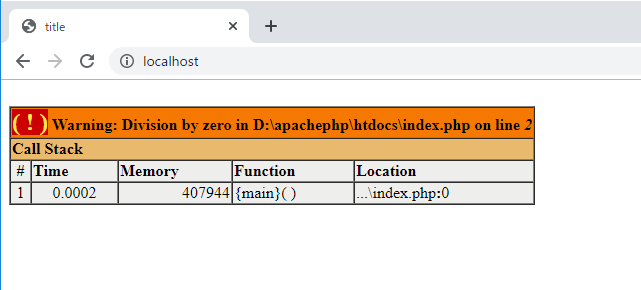
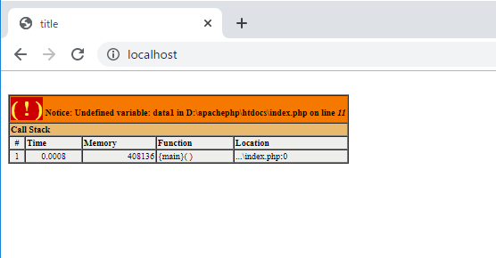

[PHP] Fatal及びNotice,、Warningメッセージ処理する方法
こんにちは。明月です。
プログラムを開発する時に様々なエラーが発生することがあります。それでtry〜catchを利用してエラー処理をしますが、開発する時に全てのユーザケースを考えることも大変だし、try~catchでも処理ができなくPHP側のエラーが発生する時があります。
例えば、ページincludeやrequireする時ですね。
また、PHPはエラーではなくてもwarningやnoticeメッセージが出る時もあります。
<?php
$data = 1/0;
?>
<!DOCTYPE html>
<html>
<head><title>title</title></head>
<body>
<?=$data1?>
</body>
</html>


上の例は1から0で割り算をするとエラーが発生することと$data1の場合はデータ宣言もしなかったのに出力しようと実装したから発生したメッセージです。
(上と下の結果の差はxDebugを設定したかどうかの差です。)
link - PHPでxDebugを設定する方法
開発中でエラーが発生するとエラーメッセージが出るのは当たり前ですが、サービスのproduction(本番)でエラーの詳細情報がでるのはNGですね。エラーメッセージだけではなく、NoticeやWaringもNGですね。
そのメッセージが画面上で表示されないような方法です。
php.iniで設定する方法
php.iniファイルをメモ帳で開くとerror_reportの領域があり、E_ALLで設定されています。E_ALLの意味は全てもメッセージを表示する設定です。
| エラーレベル | 説明 |
|---|---|
| E_ALL | すべてのメッセージと警告 |
| E_ERROR | 致命的なエラー |
| E_RECOVERABLE_ERROR | ほぼ全てエラー |
| E_WARNING | 警告 |
| E_PARSE | コンパイル単位のエラーPHPのDLLの関数のエラー |
| E_NOTICE | Noticeレベルのメッセージ |
| E_STRICT | Noticeレベルのメッセージ、PHPの以前バージョンの関数で新バージョンのおすすめ(?)のメッセージ |
| E_CORE_ERROR | PHP起動エラー |
| E_CORE_WARNING | PHP起動警告 |
| E_COMPILE_ERROR | コンパイル単位のエラー |
| E_COMPILE_WARNING | コンパイル単位の警告 |
| E_USER_ERROR | ユーザエラー(サーバ内の権限関係) |
| E_USER_WARNING | ユーザ警告(サーバ内の権限関係) |
| E_USER_NOTICE | ユーザNotice(サーバ内の権限関係) |
| E_DEPRECATED | 現在バージョンで使わない関数エラー |
| E_USER_DEPRECATED | 現在バージョンで使わないユーザエラー |

ここで全てのメッセージがでないようにするのは「0」を入力したらよいです。


でも仕様によって違いますが、Noticeだけ表示しないようにするとビット演算子を使って「E_ALL & ~E_NOTICE」で入力したらよいです。

全てのメッセージは出るけどNoticeは出ないという意味です。

PHPページでメッセージを設定する方法
PHPファイルの上の部分でerror_reporting関数を利用して設定できます。
<?php
// 上のエラーレベルの設定ですべてのメッセージで警告だけ除く。
error_reporting(E_ALL&~E_WARNING);
$data = 1/0;
?>
<!DOCTYPE html>
<html>
<head><title>title</title></head>
<body>
<?=$data1?>
</body>
</html>

参考にエラーページに設定するのは全てのページに設定しべきです。
- [PHP] Reflection - Method編2020/01/31 03:00:00
- [PHP] Reflection - Class編2020/01/30 03:00:00
- [PHP] エラーページ処理方法(追加: ob_cleanとdie関数使用方法)2020/01/29 03:00:00
- [PHP] 分散設定ファイル(.htaccess) 使用方法2020/01/28 03:00:00
- [PHP] データベース(mariaDB)を連結して使う方法2020/01/24 03:00:00
- [PHP] IOに関して2020/01/23 03:00:00
- [PHP] requireとinclude、そして「@」の使用方法2020/01/22 03:00:00
- [PHP] Fatal及びNotice,、Warningメッセージ処理する方法2020/01/19 03:00:00
- [PHP] xDebug設定する方法2020/01/18 03:00:00
- [PHP] $_SERVER, $GLOBALS, $_GET, $_POST, $_REQUEST, $_COOKIE, $_SESSION, $_FILES, $_ENV(getenv())2020/01/17 03:00:00
- [PHP] データ確認関数(var_dump, debug_zval_dump, print_r)2020/01/16 03:00:00
- [PHP] 例外処理(try ~ catch ~ finally)2020/01/15 03:00:00
- [PHP] 配列とリスト(list)2020/01/14 03:00:00
- [PHP] インタフェースと抽象クラス、クラス継承、parent、this2020/01/13 03:00:00
- [PHP] functionとclass使用方法、アクセス修飾子、そしてstatic2020/01/09 23:35:27
- [Java] 62. Spring bootでWeb-Filterを設定する方法(Spring Security)2022/03/15 22:16:37
- [Java] JWT(Json Web Token)を発行、確認する方法2022/03/14 19:12:58
- [Java] 61. Spring bootでRedisデータベースを利用してセッションクラスタリング設定する方法2022/03/01 18:20:52
- [Java] 60. Spring bootでApacheの連結とロードバランシングを設定する方法2022/02/28 18:45:48
- [Java] 59. Spring bootのJPAでEntityManagerを使い方2022/02/25 18:27:48
- [Java] 58. EclipseでSpring bootのJPAを設定する方法2022/02/23 18:11:10
- [Java] 57. EclipseでSpring bootを設定する方法2022/02/22 19:04:49
- [Python] Redisデータベースに接続して使い方2022/02/21 18:23:49
- [Java] Redisデータベースを接続して使い方(Jedisライブラリ)2022/02/16 18:13:17
- [C#] Redisのデータベースを接続して使い方2022/02/15 18:46:09
- [CentOS] Redisデータベースをインストールする方法とコマンドを使い方2022/02/14 18:33:07
- [Design pattern] 3-6. ステートパターン(State pattern)2021/11/17 20:04:47
- [Design pattern] 3-5. メメントパターン(Memento pattern)2021/11/16 20:01:36
- [Design pattern] 3-4. イテレータパターン(Iterator pattern)2021/11/15 19:31:28
- [CentOS] Linux環境(CentOS)でCassandra(NoSQL DB)をインストールする方法(DBeaverブラウザでNoSQL使い方)2021/11/12 17:33:58